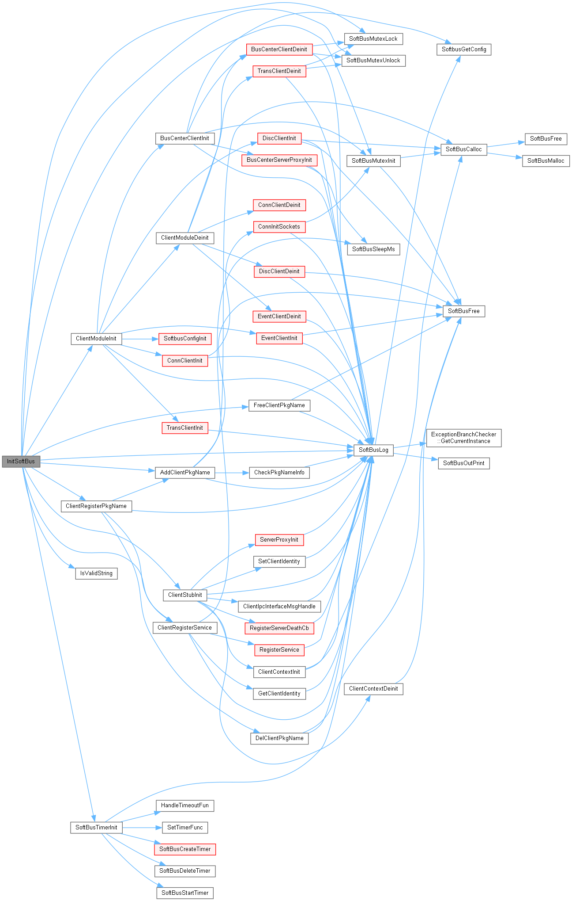

<!DOCTYPE html>
<html lang="en">
  <head>
    <meta charset="utf-8" />
    <meta name="viewport" content="width=device-width, initial-scale=1.0, maximum-scale=1.0, user-scalable=no" />

    <title>毕业论文答辩 解雲暄</title>
    <link rel="shortcut icon" href="./favicon.ico" />
    <link rel="stylesheet" href="./dist/reset.css" />
    <link rel="stylesheet" href="./dist/reveal.css" />
    <link rel="stylesheet" href="./dist/theme/black.css" id="theme" />
    <link rel="stylesheet" href="./css/highlight/base16/zenburn.css" />


  </head>
  <body>
    <div class="reveal">
      <div class="slides"><section  data-markdown><script type="text/template">

<link rel="stylesheet" href="custom_white.css">
<link rel="stylesheet" href="../custom_white.css">
<link rel="stylesheet" href="custom.css">
<link rel="stylesheet" href="../custom.css">


<!-- .slide: class="custom-background" -->

## 基于 CBMC 的
## OpenHarmony 分布式软总线组件源码
## 自动化验证实践

<br>

<!--  -->

<!-- <br> -->

#### 信息安全1901 解雲暄 3190105871 

<br>

#### 指导教师：赵永望
</script></section><section ><section data-markdown><script type="text/template">
### OpenHarmony 技术架构


智能终端设备操作系统的开源框架和平台

</script></section><section data-markdown><script type="text/template">

### 分布式软总线组件技术架构


提供统一的分布式通信功能，帮助设备之间快速发现、连接和高效传输数据
</script></section></section><section ><section data-markdown><script type="text/template">
### CBMC | C Bounded Model Checker

```c++
if ((0 <= t) && (t <= 79))
    switch (t / 20) {
    case 0:
        TEMP2 = ((B AND C) OR (~B AND D));
        TEMP3 = (K1);
        break;
    case 1:
        TEMP2 = ((B XOR C XOR D));
        TEMP3 = (K2);
        break;
    case 2:
        TEMP2 = ((B AND C) OR (B AND D) OR (C AND D));
        TEMP3 = (K3);
        break;
    case 3:
        TEMP2 = (B XOR C XOR D);
        TEMP3 = (K4);
        break;
    default:  assert(0);
    }
```

</script></section><section data-markdown><script type="text/template">

#### 控制流图 | Control Flow Graph


</script></section><section data-markdown><script type="text/template">

#### 利用 SAT / SMT 求解器

<style>
.image-container {
    display: flex;
    justify-content: space-between;
  }
</style>

<div class="image-container">
  
  
</div>

</script></section><section data-markdown><script type="text/template">

#### 循环展开

```c++
while (cond)
    Body;
```

```c++
if (cond) {
    Body;
    if (cond) {
        Body;
        if (cond) {
            Body;
            assume(!cond);
        }
    }
}
```

</script></section><section data-markdown><script type="text/template">

### CBMC | C Bounded Model Checker


</script></section><section data-markdown><script type="text/template">

### 性质

用户给定断言：`__CPROVER_assert( cond );`

自动生成断言：`--pointer-check`
- 缓冲区溢出
- 指针安全
- 内存泄漏
- 除以 0
- NaN
- 算术溢出
</script></section></section><section ><section data-markdown><script type="text/template">
```c++
bool IsValidString(const char *input, uint32_t maxLen) {
    if (input == NULL) 
        return false;

    uint32_t len = strlen(input);
    if (len >= maxLen) 
        return false;

    return true;
}
```

</script></section><section data-markdown><script type="text/template">

```c++
bool IsValidString(const char *input, uint32_t maxLen);
```

```c++
#include "../../include/xyx_proof_includes.h"
#include "softbus_utils.h"

void harness(void) {
    uint32_t maxLen;
    uint32_t size;

    __CPROVER_assume(size > 0);
    char * str = malloc(size);

    bool res = IsValidString(str, maxLen);

    if (!str)
        __CPROVER_assert(res == false, 
            "IsValidString should return false if str is a null pointer.");
}
```

</script></section><section data-markdown><script type="text/template">


</script></section><section data-markdown><script type="text/template">

#### Loop unwinding failure


<center>

`--unwind 3`

`--remove-function-body` <!-- .element: class="fragment" -->

</center>

</script></section><section data-markdown><script type="text/template">

```c++
bool IsValidString(const char *input, uint32_t maxLen);
```

```c++
#include "../../include/xyx_proof_includes.h"
#include "softbus_utils.h"

void harness(void) {
    uint32_t maxLen;
    uint32_t size;

    __CPROVER_assume(size > 0);
    char * str = malloc(size);

    if (str)
        __CPROVER_assume(str[size - 1] == 0);

    bool res = IsValidString(str, maxLen);

    if (!str)
        __CPROVER_assert(res == false, 
            "IsValidString should return false if str is a null pointer.");
}
```

</script></section><section data-markdown><script type="text/template">

#### `InitSoftBus`

<center>

解决方案：桩函数<!-- .element: class="fragment" -->

</center>



</script></section><section data-markdown><script type="text/template">

```c++ [1|3-7|8-12|13-27|28-30]
static int32_t AddClientPkgName(const char *pkgName)
{
    // 拿锁
    if (pthread_mutex_lock(&g_pkgNameLock) != SOFTBUS_OK) {
        SoftBusLog(SOFTBUS_LOG_COMM, SOFTBUS_LOG_ERROR, "lock init failed");
        return SOFTBUS_LOCK_ERR;
    }
    // 检查包名合法
    if (CheckPkgNameInfo(pkgName) == false) {
        (void)pthread_mutex_unlock(&g_pkgNameLock);
        return SOFTBUS_INVALID_PARAM;
    }
    // 创建包名信息，加入包名列表
    PkgNameInfo *info = (PkgNameInfo *)SoftBusCalloc(sizeof(PkgNameInfo));
    if (info == NULL) {
        SoftBusLog(SOFTBUS_LOG_COMM, SOFTBUS_LOG_ERROR, "Create PkgNameInfo malloc fail.");
        pthread_mutex_unlock(&g_pkgNameLock);
        return SOFTBUS_MALLOC_ERR;
    }
    if (strcpy_s(info->pkgName, PKG_NAME_SIZE_MAX, pkgName) != EOK) {
        SoftBusLog(SOFTBUS_LOG_COMM, SOFTBUS_LOG_ERROR, "Add strcpy_s failed.");
        SoftBusFree(info);
        (void)pthread_mutex_unlock(&g_pkgNameLock);
        return SOFTBUS_MEM_ERR;
    }
    ListInit(&info->node);
    ListAdd(&g_pkgNameList, &info->node);
    // 释放锁
    (void)pthread_mutex_unlock(&g_pkgNameLock);
    return SOFTBUS_OK;
}
```

</script></section><section data-markdown><script type="text/template">

#### 桩函数

```c++
static int32_t AddClientPkgName_stub(const char *pkgName)
{
    if (pthread_mutex_lock(&g_pkgNameLock) != SOFTBUS_OK)
        return SOFTBUS_LOCK_ERR;
    
    int32_t ret;
    __CPROVER_assume(ret == SOFTBUS_INVALID_PARAM || 
                     ret == SOFTBUS_MALLOC_ERR ||
                     ret == SOFTBUS_MEM_ERR ||
                     ret == SOFTBUS_OK);
    
    (void)pthread_mutex_unlock(&g_pkgNameLock);
    return ret;
}
```

</script></section><section data-markdown><script type="text/template">

### 结论

在所使用的操作系统相关功能以及其他 OpenHarmony 组件相关函数没有内存安全问题的前提下，以下模块没有内存安全问题：

- 发布服务接口 `PublishLNN`
- 注销服务接口 `StopPublishLNN`
- 发现服务接口 `RefreshLNN`
- 停止发现接口 `StopRefreshLNN`
- 组网请求接口 `JoinLNN` 
- 退网请求接口 `LeaveLNN`

编写的 harness 可供 CI 系统集成。

</script></section><section data-markdown><script type="text/template">


在具体使用场景下不会发生

</script></section><section data-markdown><script type="text/template">

```c++
RetType foo(Para...) {
    __CPROVER_assert(pre_cond);

    return fooImpl(para...);
}
```

</script></section><section data-markdown><script type="text/template">

### 局限性

- 外部函数没有被覆盖<!-- .element: class="fragment" -->
- 回调函数无法覆盖<!-- .element: class="fragment" -->
- CBMC 工具本身仍有问题<!-- .element: class="fragment" -->
- 工作顺序导致的工作量和文档问题<!-- .element: class="fragment" -->
</script></section></section><section  data-markdown><script type="text/template">
## 基于 CBMC 的
## OpenHarmony 分布式软总线组件源码
## 自动化验证实践

<br>

<!--  -->

<!-- <br> -->

#### 信息安全1901 解雲暄 3190105871 

<br>

#### 指导教师：赵永望</script></section></div>
    </div>

    <script src="./dist/reveal.js"></script>

    <script src="./plugin/markdown/markdown.js"></script>
    <script src="./plugin/highlight/highlight.js"></script>
    <script src="./plugin/zoom/zoom.js"></script>
    <script src="./plugin/notes/notes.js"></script>
    <script src="./plugin/math/math.js"></script>
    <script>
      function extend() {
        var target = {};
        for (var i = 0; i < arguments.length; i++) {
          var source = arguments[i];
          for (var key in source) {
            if (source.hasOwnProperty(key)) {
              target[key] = source[key];
            }
          }
        }
        return target;
      }

      // default options to init reveal.js
      var defaultOptions = {
        controls: true,
        progress: true,
        history: true,
        center: true,
        transition: 'default', // none/fade/slide/convex/concave/zoom
        slideNumber: true,
        plugins: [
          RevealMarkdown,
          RevealHighlight,
          RevealZoom,
          RevealNotes,
          RevealMath
        ]
      };

      // options from URL query string
      var queryOptions = Reveal().getQueryHash() || {};

      var options = extend(defaultOptions, {"width":1600,"height":900,"margin":0.04,"transition":"fade","slideNumber":true}, queryOptions);
    </script>


    <script>
      Reveal.initialize(options);
    </script>
  </body>
</html>
